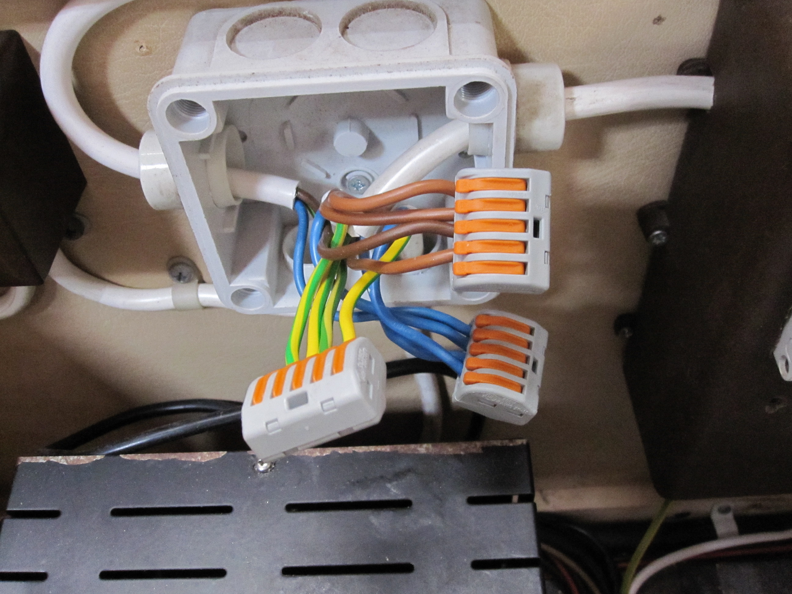

Kabels en interfaces zijn super belangrijk in de wereld van technologie en computers. Ze zorgen ervoor dat al onze gadgets met elkaar kunnen praten en informatie kunnen delen. Laat me je wat meer vertellen over een paar veel voorkomende verbindingen:
1. USB: USB staat voor Universal Serial Bus, en dat is precies wat het is. Het is een soort stekker waarmee je van alles kunt aansluiten, zoals je telefoon, een externe harde schijf of een muis. USB-kabels zijn overal te vinden en hebben verschillende vormen, zoals USB-A, USB-B en USB-C.
2. HDMI: HDMI betekent High-Definition Multimedia Interface. Dit is de kabel die je gebruikt om je laptop, spelcomputer of Blu-ray speler aan je tv te koppelen. Het zorgt voor een superhelder beeld en geluid, perfect voor gamen of films kijken.
3. Ethernet: Als je superstabiele internetverbinding wilt, dan is Ethernet de way to go. Het is een dikke kabel die je in je computer of router steekt. Hiermee krijg je razendsnel internet zonder al te veel gedoe.
4. VGA: VGA, of Video Graphics Array, wordt tegenwoordig niet zo vaak meer gebruikt, maar het was de standaardkabel voor het aansluiten van computers op monitoren in het verleden. Het is een soort blauwe stekker met veel pinnetjes.
5. Audio Jack: Als je muziek wilt luisteren of een koptelefoon wilt aansluiten, dan heb je een audio jack nodig. Dit is de ronde stekker die je in je telefoon of laptop steekt.
Kabels en interfaces zijn dus eigenlijk de bruggen tussen al onze technische apparaten.

"